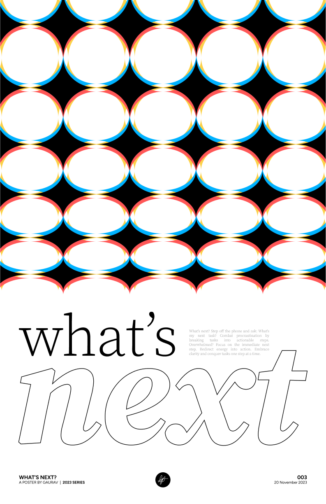

My Posters
In my free time, I like to design random stuff. Recently, I've been toying around with poster design. It
started as an activity when I was bored, but after iterating on my designs and getting them printed, I'm
happy to announce that I have my own poster line. Here are a few of my designs.
|
|

|

|
|
Why Product?
The story of why I got into product management...
My journey into product management traces back to my early days, when I ran a design agency
in grade 8,
linking folks globally through design. That's where the love affair with design's impact began. Then, a high
school finance competition sparked my fascination with money's role in growth. Business and finance became
my focus. But tech sneaked in during another round of that competition. I hopped on the coding train,
learning Python and then diving into frontend languages.
In this pursuit, a revelation struck—why pick just one passion? Enter product management: a blend
of creativity, business, and tech. It's like discovering the perfect mix for my interests. To level up, I've
taken on competitions, joined clubs, and dived deep into learning. My leadership skills sharpened as Vice
President at GBDA Society and Technical Director at QTPOC, while my hunger for learning led me through
Harvard's Computer Science course (CS50) and into Google's UX Design Certification.
Now, here I am, pumped to bring this mix of creativity, business chops, and tech wizardry to the table in my
upcoming co-op in Fall 2024.